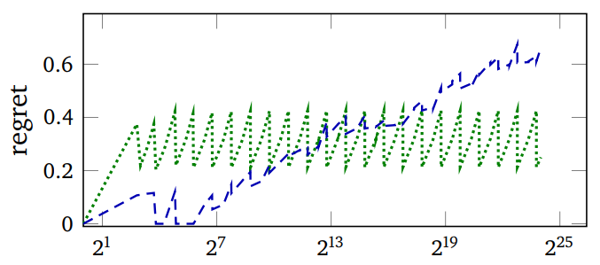

Adaptive Hashing
Tags: tech, lisp, Date: 2025-05-03
At the 2024 ELS, I gave a talk on adaptive hashing, which focusses on making general purpose hash tables faster and more robust at the same time.
Theory vs Practice
Hash table theory most concerns itself with the asymptotic worst-case cost with a hash function chosen randomly from a family of hash functions. Although these results are very relevant in practice,
those pesky constant factors, that the big-O cost ignores, do matter, and
we don't pick hash functions randomly but fix the hash function for the lifetime of the hash table.
There are Perfect Hashing algorithms, that choose an optimal hash function for a given set of keys. The drawback is that they either require the set of keys to be fixed or they are too slow to be used as general purpose hash tables.
Still, the idea that we can do better by adapting the hash function to the actual keys is key. Can we do that online, that is, while the hash table is being used? Potential performance gains come from improving the constant factors mentioned above by
having fewer collisions, and

being more cache-friendly.

The images above plot regret (the expected number of comparisons of
per lookup minus the minimum achievable) and the measured run-time
of PUT operations vs the number of keys in the hash table with a
particular key distribution. Green is Murmur (a robust hash
function), Blue is SBCL's expedient EQ hash. The
wiggling of the graphs is due to the resizing of the hash table as
keys are added to it.
These gains must more than offset the cost of choosing a hash function and switching to it, but we have to make some assumption about the distribution of keys. In fact, some default hash functions already make such assumptions to make the common cases faster, usually at the cost of weakened worst-case guarantees.
Implementation
The general idea is sound, but turning it into real performance gains is hard. The rest of this post is about how SBCL's built-in hash tables, which had been reasonably fast, were modified. The core switching mechanism looks at
the length of the collision chain on PUT operations,
the collision count on rehash (when the hash table is grown), and
the size of the hash table.
Adapting EQ hash tables
Init to to constant hash function. This a fancy way of saying that we do linear search in a vector internally. This is an
EQhash table, so key comparison is as single assembly instruction.When the hash table is grown to more than 32 keys and it must be rehashed anyway, we switch to a hash function that does a single right shift with the number of bits to shift determined from the longest common run of low-bits in the keys.
If too many collisions, we switch to the previous default SBCL
EQ-hash function that has been tuned for a long time.If too many collisions, we switch to Murmur, a general purpose hash. We could also go all the way to cryptographic hashes.
In step 2, the hash function with the single shift fits the memory allocator's behaviour nicely: it is a perfect hash for keys forming arithmetic sequences, which is often approximately true for objects of the same type allocated in a loop.

In this figure, the red line is the adaptive hash.
Adapting EQUAL hash tables
For composite keys, running the hash function is the main cost. Adaptive hashing does the following.
For string keys, hash only the first and last 2 characters.
For list keys, only hash the first 4 elements.
If too many collisions, double the limit.

So, SBCL hash tables have been adaptive for almost a year now,
gaining some speed in common cases, and robustness in others.
The full paper is here.